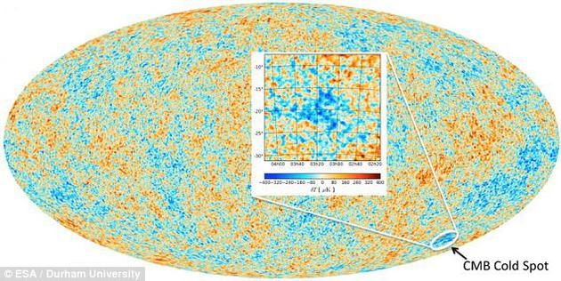
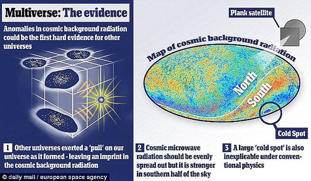
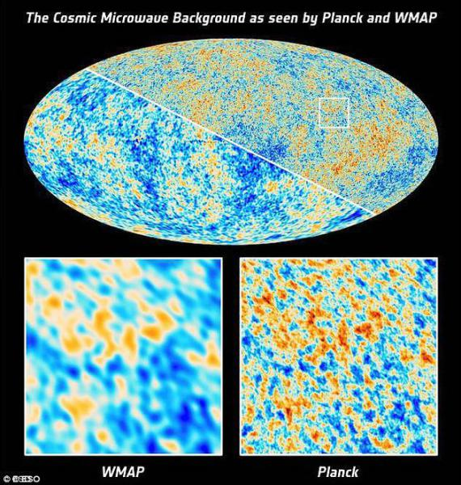
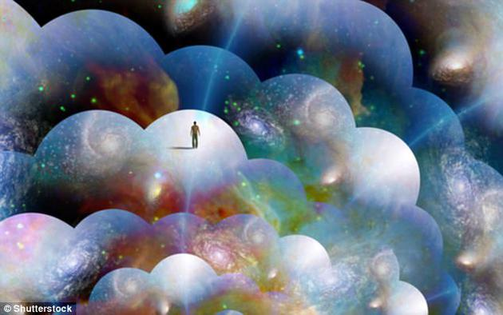

You are using an outdated browser. Please upgrade your browser to improve your experience.
宇宙中的另一个自己：神秘冷斑或为平行宇宙存在证据

图为普朗克卫星生成的宇宙微波背景（CMB）图。红色代表温度较高区域，蓝色代表较低区域。放大图中即为冷斑所在地。这或许是多重宇宙存在的证据。

对宇宙微波背景的测量结果显示，冷斑比周边地区的温度约低0.00015摄氏度。研究人员称，冷斑或许是我们的宇宙和其它宇宙相撞的产物。

这块冷斑是宇宙130亿年前形成时产生的。2004年，NASA的威尔金森微波各向异性探测器（WMAP satellite）首次发现了它的存在，后由欧空局的普朗克任务于2013年进一步证实。

在黑暗、虚无的太空中，很难想象我们并不是宇宙中唯一的存在。但请你想象一下，我们所在的宇宙会不会只是无数个平行宇宙中的一个呢？在其它宇宙中，说不定你就是美国总统。
新浪科技讯 北京时间7月5日消息，据国外媒体报道，在黑暗、虚无的太空中，很难想象我们并不是宇宙中唯一的存在。但请你想象一下，我们所在的宇宙会不会只是无数个平行宇宙中的一个呢？在其它宇宙中，说不定你就是美国总统，这就是所谓的“多重宇宙理论”。一项最新研究指出，神秘的宇宙“冷斑”或许能证明平行宇宙的存在。
多年来，这个直径18亿光年的冷斑一直令科学家困惑不已。对宇宙微波背景的测量结果显示，冷斑比周边地区的温度约低0.00015摄氏度，此前有研究人员认为，冷斑的温度较低，仅仅是因为这片区域中的星系比同等面积的其它区域少1万个左右。但一项新研究显示，宇宙中不可能存在这么大的一片空白，说明这块冷斑无法用“缺少物质”来解释。
为此，人们针对冷斑的起源提出了五花八门的解释。其中有一种理论认为，冷斑是平行宇宙存在的证据。“我们还无法完全排除此前的解释，即冷斑是由粒子物理标准模型的异常波动引起的。”该研究的共同作者、杜伦大学天文学家汤姆·山克斯教授（Tom Shanks）指出，“但如果这不是真正的答案，那一定存在更加离奇的解释。最令人激动的一种说法是，冷斑是我们的宇宙和其它宇宙相撞的产物。如果进一步分析证实了这一理论，冷斑将成为首个证明平行宇宙存在的证据。”
如获证实，冷斑将证明太空中存在无穷无尽的平行宇宙，包含着无数种可能性。“无数个宇宙在更高的维度中紧密相连，而我们的感官无法直接感受到它们的存在。”天文学家斯图尔特·克拉克博士（Dr Stuart Clarke）指出，“每个平行宇宙中都有一个不同的‘现实’。也许在某个宇宙中，你才是这篇文章的作者，而我是读者；也许在某个宇宙中，川普在推特上转发的只是搞笑的猫咪视频。”
这块冷斑是宇宙130亿年前形成时产生的。2004年，NASA的威尔金森微波各向异性探测器（WMAP satellite）首次发现了它的存在，后由欧空局的普朗克任务于2013年进一步证实，此次最新研究说明，冷斑并不是一块巨大的空白地带。该区域的星系围绕无数片较小的空白区域分布，就像泡泡一样。但这无法解释冷斑的温度为何低于周边区域。
为证明这些星系簇是冷斑存在的原因，研究人员称我们需要建立一个非标准宇宙模型。“但数据的不足使我们大大受限。”该研究的主要作者、鲁阿利·麦肯锡（Ruari Mackenzie）指出。
该研究的模拟结果显示，这块冷斑随机形成的可能性只有2%。说明无论多重宇宙是否存在，我们都需要对这片神秘区域继续开展大量研究。（叶子）